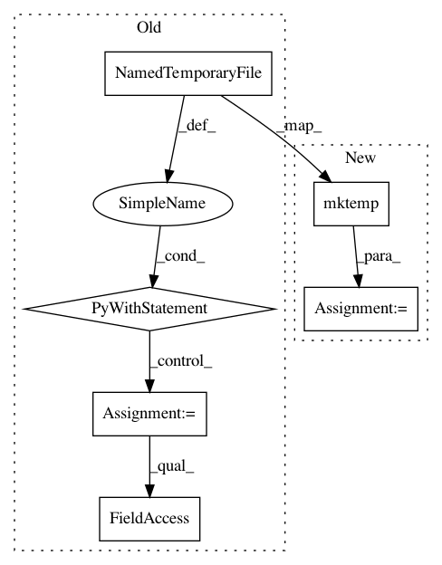

60a81d88434b3eed8be6525754a8c0e78b6cd0e7,nilearn/plotting/tests/test_img_plotting.py,,test_plot_functions,#,82
Before Change
// smoke-test for each plotting function with default arguments
for plot_func in [plot_anat, plot_img, plot_stat_map, plot_epi,
plot_glass_brain]:
with tempfile.NamedTemporaryFile(suffix=".png") as fp:
plot_func(img, output_file=fp.name)
// test for bad input arguments (cf. /릖)
ax = plt.subplot(111, rasterized=True)
with tempfile.NamedTemporaryFile(suffix=".png") as fp:
plot_stat_map(
img, symmetric_cbar=True,
After Change
// test for bad input arguments (cf. /릖)
ax = plt.subplot(111, rasterized=True)
filename = tempfile.mktemp(suffix=".png")
try:
plot_stat_map(img, symmetric_cbar=True,
output_file=filename,
axes=ax, vmax=np.nan)
In pattern: SUPERPATTERN
Frequency: 4
Non-data size: 6
Instances
Project Name: nilearn/nilearn
Commit Name: 60a81d88434b3eed8be6525754a8c0e78b6cd0e7
Time: 2015-11-03
Author: alexandre.abadie@inria.fr
File Name: nilearn/plotting/tests/test_img_plotting.py
Class Name:
Method Name: test_plot_functions
Project Name: nilearn/nilearn
Commit Name: 60a81d88434b3eed8be6525754a8c0e78b6cd0e7
Time: 2015-11-03
Author: alexandre.abadie@inria.fr
File Name: nilearn/plotting/tests/test_img_plotting.py
Class Name:
Method Name: test_plot_anat
Project Name: nilearn/nilearn
Commit Name: 60a81d88434b3eed8be6525754a8c0e78b6cd0e7
Time: 2015-11-03
Author: alexandre.abadie@inria.fr
File Name: nilearn/plotting/tests/test_img_plotting.py
Class Name:
Method Name: test_plot_connectome
Project Name: nilearn/nilearn
Commit Name: 60a81d88434b3eed8be6525754a8c0e78b6cd0e7
Time: 2015-11-03
Author: alexandre.abadie@inria.fr
File Name: nilearn/plotting/tests/test_img_plotting.py
Class Name:
Method Name: test_save_plot